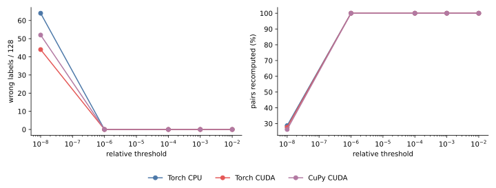
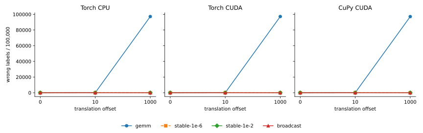
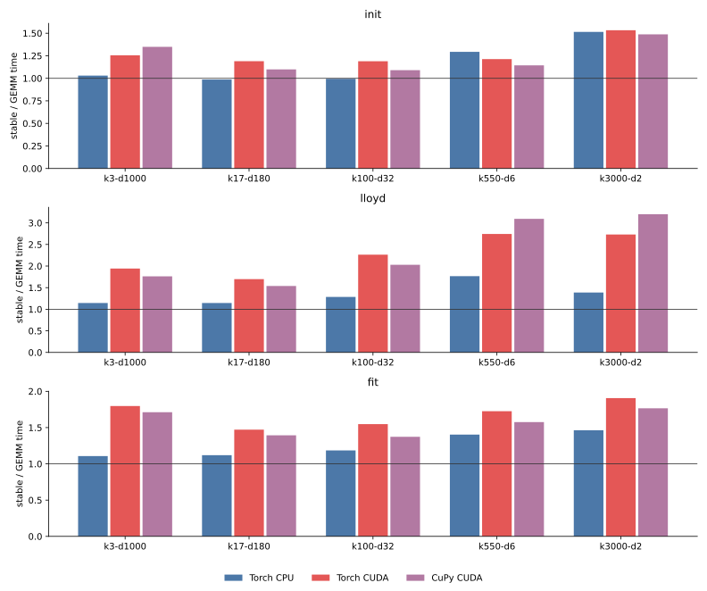
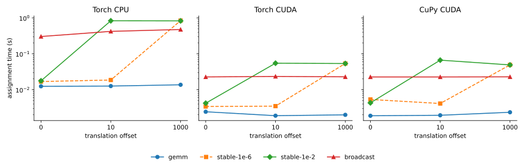

017 — Catastrophic cancellation and a direct-distance fallback
The GEMM identity
||x - c||² = ||x||² + ||c||² - 2 x @ c.Tsubtracts three large, rounded terms when x and c are close but far from the origin. The result can be zero, negative, or large enough to change the nearest center even though the true squared distance is small. Clamping the result to zero removes negative distances but does not recover the lost precision.
This experiment evaluates the safeguard from cakedev0/scikit-learn#23: if the GEMM result is less than a dtype-specific fraction of ||x||² + ||c||², recompute that pair directly as sum((x - c)²). The referenced Cython implementation uses 1e-2 for float32 and 1e-8 for float64 and applies the check inside its pairwise loops.
The array-backend prototype is pinned to commit 3ca8690:
stable_gemm_distancescomputes GEMM distances, gathers suspicious pairs, recomputes direct distances in bounded chunks, and scatters them back;stable_gemm_scores_argminuses the corrected matrix for assignment;stable_distances_to_candidatesapplies the same correction to greedy k-means++;- the regression test checks assignment and unique-center recovery far from the origin.
results.json contains the 135 ordinary stable-distance runs, 315 CPU/CUDA accuracy-probe rows, and 108 translated-assignment runs. tables.md contains the ordinary-workload time ratios and recomputation rates.
Setup
- Accuracy probe: 32 unique random rows repeated four times, 32 candidate centers, dimensions 2, 32, and 1000, translations from 0 through
1e5, float32 and float64, and thresholds from1e-8through1e-2. - Initialization regression: 10 unique two-dimensional rows repeated 50 times, requesting all 10 centers with greedy k-means++.
- Translated assignment benchmark: 100,000 by 32 float32 rows, 100 centers, offsets 0, 10, and 1000, and three seeds.
- Ordinary workload benchmark: the five tasks and three phases from 016, using the
1e-2float32 threshold. - Backends: PyTorch CPU, PyTorch CUDA, and CuPy CUDA; four CPU threads; TF32 disabled; one NVIDIA L4.
- Direct broadcast is the correctness reference. Timing and memory cover only the selected assignment implementation; reference calculation is outside measurement.
Cancellation is a correctness problem
In the exact upstream-style float32 regression translated by 1e3, plain GEMM returns only 7 of 10 unique centers on CPU and 6 of 10 on both CUDA backends. Stable GEMM returns all 10. At offsets 1e4 and 1e5, plain GEMM still returns only 3–6 centers while the fallback returns all 10.
| float32 k-means++, unique centers / 10 | offset 1e3 | offset 1e4 | offset 1e5 |
|---|---|---|---|
| Torch CPU, GEMM | 7 | 3 | 5 |
| Torch CUDA, GEMM | 6 | 6 | 6 |
| CuPy CUDA, GEMM | 6 | 6 | 6 |
| every backend, stable | 10 | 10 | 10 |
The broader probe confirms that this is not limited to exact duplicates. At offset 1e3, plain float32 GEMM mislabels 104–124 of 128 rows depending on dimension and backend; the 1e-2 fallback has zero errors. Float64 GEMM has no label errors through offset 1e5 in this probe, although the safeguard conservatively recomputes small residuals.

The threshold matters. 1e-8 is insufficient for float32. 1e-6 fixes the small offset-1e3 probe, but not the larger offset-10 benchmark below. Cakedev0's 1e-2 threshold has zero label errors in every tested float32 case. Its conservatism is intentional: at offset 10 it marks all pairs in the translated benchmark before cancellation becomes catastrophic.
Assignment quality

| offset | plain GEMM wrong labels | stable 1e-6 | stable 1e-2 |
|---|---|---|---|
| 0 | 0 | 0 | 0 |
| 10 | 96–99 | 100–106 | 0 |
| 1000 | 97,141–97,213 | 0 | 0 |
Ranges span the three backends after averaging three seeds. At offset 1000, plain GEMM's direct-reference inertia is 1.63–1.64 times broadcast inertia. Both stable thresholds match broadcast there because both recompute all pairs. At offset 10, only 1e-2 is reliable.
Ordinary centered-like data does not expose a material quality regression: stable versus plain GEMM full-fit inertia ranges from -0.0031% to +0.1411%. As with 016, initializer roundoff can alter stochastic center selection, so exact inertia equality is not expected.
Time

On ordinary workloads, only about 0–3 pairs per million trigger in the first four tasks. The quantized k3000-d2 task triggers roughly 0.5% of pairs. Despite sparse recomputation, detecting indices and gathering/scattering them has visible eager-execution overhead:
| phase | Torch CPU stable / GEMM | Torch CUDA | CuPy CUDA |
|---|---|---|---|
| initialization | 0.99–1.51x | 1.19–1.53x | 1.09–1.49x |
| Lloyd | 1.14–1.77x | 1.70–2.74x | 1.54–3.20x |
| full fit | 1.11–1.46x | 1.47–1.91x | 1.37–1.77x |
The fallback remains much faster than full broadcast when triggers are sparse. For centered 100,000 by 32 assignment, stable 1e-2 takes 17.7 ms on CPU, 4.2 ms on Torch CUDA, and 4.3 ms on CuPy, versus 304, 22.7, and 22.7 ms for broadcast.

The Python pair fallback loses that advantage when the trigger is dense:
| offset 1000 | GEMM | stable 1e-2 | bounded broadcast |
|---|---|---|---|
| Torch CPU | 13.7 ms, wrong | 828.5 ms | 477.1 ms |
| Torch CUDA | 2.0 ms, wrong | 53.7 ms | 22.9 ms |
| CuPy CUDA | 2.4 ms, wrong | 49.1 ms | 22.8 ms |
When every pair triggers, gather/scatter stable GEMM is 1.7–2.3 times slower than bounded broadcast, in addition to paying for the now-discarded GEMM.
Memory
For centered translated-benchmark data, CUDA peak increments are 52–54 MiB for GEMM, 83–86 MiB for stable GEMM, and 261 MiB for bounded broadcast. Sparse fallback therefore keeps most of GEMM's memory advantage.
When all pairs trigger, the selected-pair index arrays and gathered rows raise stable GEMM to 376–380 MiB, above broadcast's 261 MiB. On ordinary tasks, stable/GEMM peak ratios range from measurement-noise-level equality up to 1.61x. Input storage dominates several large tasks, hiding smaller temporary differences.
Recommendation
The fallback fixes a real, severe, translation-dependent correctness failure. Clamping GEMM distances is not enough, and 1e-6 is not a robust float32 threshold. Retain cakedev0's 1e-2 float32 and 1e-8 float64 criteria.
The current Python gather/scatter prototype is suitable evidence, not the preferred production shape:
1. Use pair-selective direct recomputation while the suspicious fraction is low, preserving GEMM's time and memory advantages. 2. If a tile has a high suspicious fraction, discard its GEMM result and recompute the whole tile with bounded direct broadcast. This avoids large index and gathered-row buffers. 3. Prefer a backend-fused implementation longer term. Cakedev0's Cython loop tests and repairs each pair in place, avoiding the eager indexing overhead measured here.
Centering dense training data before fitting reduces the risk, as in scikit-learn's estimator, but it is not a complete API-level solution: standalone k-means++ and precomputed or externally supplied centers still need stable distances.
Previous: GEMM versus broadcast distances. Index: journal.